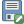
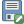

.
Come Iniziare¶
Questo capitolo fornisce una rapida panoramica sull’installazione di QGIS, su alcuni dati campione scaricabili dal sito di QGIS e su come avviare una prima semplice sessione in cui visualizzare raster e vettori.
Installazione¶
L’installazione di KADAS è molto semplice. Pacchetti standard per l’installazione sono disponibili per MS Windows e Mac OS X. Per le distribuzioni GNU/Linux sono disponibili pacchetti binari (rpm e deb) o repository da aggiungere al gestore di installazione. Maggiori informazioni sul sito http://download.qgis.org.
Installazione da codice sorgente¶
Se devi compilare KADAS da codice sorgente, fai riferimento alle istruzioni di installazione. Queste sono fornite insieme al codice sorgente di KADAS in un file chiamato ‘INSTALL’. Puoi trovare questo file all’indirizzo http://htmlpreview.github.io/?https://raw.github.com/qgis/QGIS/master/doc/INSTALL.html
Installazione su supporti esterni¶
Puoi avviare KADAS con l’opzione --configpath; questa andrà a sostituire il percorso predefinito delle cartelle create da qgis (per esempio, ~/.qgis2 in Linux) e obbligherà QSettings ad utilizzare questa cartella. Questa opzione permette di creare un’installazione personalizzata di KADAS, inclusi plugin e impostazioni, e di copiarla su un supporto esterno (penna USB). Vedi la sezione Menu Sistema per ulteriori informazioni.
Dati campione¶
La guida utente presenta alcuni esempi basati sull’insieme di dati campione di KADAS.
Durante l’installazione di KADAS in Windows hai la possibilità di scaricare un insieme di dati campione. Se hai selezionato questa opzione, i dati verranno scaricati nella cartella Documenti e verranno copiati in una cartella chiamata GIS Database. Puoi usare Windows Explorer per spostare questa cartella in qualunque altra posizione. Se non hai selezionato l’opzione per scaricare l’insieme di dati campione durante l’installazione iniziale di KADAS puoi scegliere fra:
{kind=link}
usare dati GIS che hai già;
- Download sample data from http://qgis.org/downloads/data/qgis_sample_data.zip
disinstallare KADAS e reinstallarlo selezionando l’opzione per lo scaricamento dei dati (opzione consigliata solo se le soluzioni precedenti non sono riuscite)

 For GNU/Linux and Mac OS X, there are not yet dataset installation
packages available as rpm, deb or dmg. To use the sample dataset, download the
file qgis_sample_data as a ZIP archive from
http://qgis.org/downloads/data and unzip the archive
on your system.
For GNU/Linux and Mac OS X, there are not yet dataset installation
packages available as rpm, deb or dmg. To use the sample dataset, download the
file qgis_sample_data as a ZIP archive from
http://qgis.org/downloads/data and unzip the archive
on your system.
L’insieme di dati Alaska comprende tutti i dati GIS usati come esempi e schermate nel manuale d’uso, e include anche un piccolo database GRASS. La proiezione per l’insieme di dati campione di KADAS è Alaska Albers Equal Area con unità in piedi. Il codice EPSG è 2964.
PROJCS["Albers Equal Area",
GEOGCS["NAD27",
DATUM["North_American_Datum_1927",
SPHEROID["Clarke 1866",6378206.4,294.978698213898,
AUTHORITY["EPSG","7008"]],
TOWGS84[-3,142,183,0,0,0,0],
AUTHORITY["EPSG","6267"]],
PRIMEM["Greenwich",0,
AUTHORITY["EPSG","8901"]],
UNIT["degree",0.0174532925199433,
AUTHORITY["EPSG","9108"]],
AUTHORITY["EPSG","4267"]],
PROJECTION["Albers_Conic_Equal_Area"],
PARAMETER["standard_parallel_1",55],
PARAMETER["standard_parallel_2",65],
PARAMETER["latitude_of_center",50],
PARAMETER["longitude_of_center",-154],
PARAMETER["false_easting",0],
PARAMETER["false_northing",0],
UNIT["us_survey_feet",0.3048006096012192]]
Se vuoi usare KADAS come interfaccia grafica per GRASS, scarica una location campione di GRASS (per esempio Spearfish o South Dakota) direttamente dal sito ufficiale http://grass.osgeo.org/download/sample-data/.
Sessione di esempio¶
Ora che hai installato KADAS e hai a disposizione un insieme di dati campione, ti faremo vedere una breve e semplice dimostrazione. Visualizzeremo un raster e un vettore. Useremo il raster landcover, qgis_sample_data/raster/landcover.img, e il vettore lakes, qgis_sample_data/gml/lakes.gml.
Avvio di QGIS¶
- Avvia QGIS digitando “KADAS” nel terminale, oppure, se hai installato KADAS con pacchetti binari precompilati, trovalo nel menu delle applicazioni.
Avvia KADAS usando il menu Start o l’icona sul desktop, oppure fai doppio click su un file di progetto KADAS.
- Doppio click sull’icona nella cartella Applicazioni.
Caricare raster e vettori dall’insieme di dati campione¶
- Click on the
 Add Raster Layer icon.
Add Raster Layer icon. Trova la cartella qgis_sample_data/raster/, seleziona il file ERDAS IMG landcover.img e clicca [Apri].
- If the file is not listed, check if the Files of type
 combo box at the bottom of the dialog is set on the right
type, in this case “Erdas Imagine Images (*.img, *.IMG)”.
combo box at the bottom of the dialog is set on the right
type, in this case “Erdas Imagine Images (*.img, *.IMG)”. - Now click on the
 Add Vector Layer icon.
Add Vector Layer icon.  File deve essere selezionato come Tipo di sorgente nella finestra di dialogo Aggiungi vettore . Ora clicca su [Sfoglia] per selezionare il vettore.
File deve essere selezionato come Tipo di sorgente nella finestra di dialogo Aggiungi vettore . Ora clicca su [Sfoglia] per selezionare il vettore.- Browse to the folder qgis_sample_data/gml/, select ‘Geography Markup
Language [GML] [OGR] (.gml,.GML)’ from the Filter combo box, then select the GML file lakes.gml and
click [Open]. In the Add vector layer dialog, click [OK].
The Coordinate Reference System Selector dialog opens with NAD27 / Alaska Alberts selected, click [OK].
Ingrandisci la mappa su un’area con alcuni laghi.
Fai doppio click sul vettore lakes nella legenda per aprire la finestra di dialogo Proprietà.
Clicca sulla scheda Stile e seleziona blu come colore di riempimento.
Clicca sulla scheda Etichette e spunta la casella di controllo
 Etichetta questo valore con per abilitare l’etichettatura. Scegli il campo “NAMES” come campo per l’etichetta.
Etichetta questo valore con per abilitare l’etichettatura. Scegli il campo “NAMES” come campo per l’etichetta.Per migliorare la leggibilità delle etichette, puoi aggiungere un contorno bianco cliccando su “Contorno” nell’elenco a sinistra. Spunta la casella
Disegna contorno del testo e scegli 3 come dimensione.Clicca [Applica], controlla se il risultato è buono e infine clicca [OK].
Hai visto come è facile visualizzare raster e vettori in KADAS!? Prosegui con la sezione successiva per imparare ulteriori funzionalità, caratteristiche ed impostazioni.
Avvio e chiusura di KADAS¶
Nella sezione Sessione di esempio abbiamo già visto come avviare KADAS. Ora ripetiamo questa operazione per dimostrare come KADAS fornisca ulteriori opzioni all’avvio da riga di comando.
- Assumendo che KADAS sia installato nel tuo PATH, puoi avviarlo semplicemente digitando qgis nel terminale oppure facendo doppio click sull’icona di KADAS presente sul desktop o nel menu delle applicazioni.
Avvia KADAS usando il menu Start o l’icona sul desktop, oppure fai doppio click su un file di progetto KADAS.
- Fai doppio click sull’icona di KADAS nella cartella Applicazioni (Applications). Se vuoi avviare KADAS da una terminale, digita /percorso-installazione-eseguibile/Contents/MacOS/Qgis.
Per uscire da KADAS, clicca il menu opzioni Progetto QGIS ‣ Esci, oppure usa la scorciatoia Ctrl+Q.
Opzioni linea di comando¶
KADAS supporta un certo numero di opzioni se avviato da riga di comando. Per avere una lista delle opzioni possibili, digita “qgis –help” nel terminale. La corretta sintassi di KADAS è:
qgis --help
QGIS - 2.6.0-Brighton 'Brighton' (exported)
QGIS is a user friendly Open Source Geographic Information System.
Usage: /usr/bin/qgis.bin [OPTION] [FILE]
OPTION:
[--snapshot filename] emit snapshot of loaded datasets to given file
[--width width] width of snapshot to emit
[--height height] height of snapshot to emit
[--lang language] use language for interface text
[--project projectfile] load the given QGIS project
[--extent xmin,ymin,xmax,ymax] set initial map extent
[--nologo] hide splash screen
[--noplugins] don't restore plugins on startup
[--nocustomization] don't apply GUI customization
[--customizationfile] use the given ini file as GUI customization
[--optionspath path] use the given QSettings path
[--configpath path] use the given path for all user configuration
[--code path] run the given python file on load
[--defaultui] start by resetting user ui settings to default
[--help] this text
FILE:
Files specified on the command line can include rasters,
vectors, and QGIS project files (.qgs):
1. Rasters - supported formats include GeoTiff, DEM
and others supported by GDAL
2. Vectors - supported formats include ESRI Shapefiles
and others supported by OGR and PostgreSQL layers using
the PostGIS extension
Suggerimento
Esempio di utilizzo delle opzioni da riga di comando
Puoi avviare KADAS con dei file grazie all’opzione fornita da riga di comando. Per esempio, ipotizzando di trovarsi nella cartella qgis_sample_data, puoi avviare KADAS con un vettore e un raster inserendo il comando: qgis ./raster/landcover.img ./gml/lakes.gml
Opzioni linea di comando --snapshot
L’opzione consente di catturare una schermata in formato PNG della mappa. Utile quando hai molti progetti e vuoi generare schermate dai propri dati.
Il file PNG generato ha una risoluzione di 800x600 pixels. Puoi adattare la risoluzione grazie agli argomenti “–width” e “–height” da riga di comando. Puoi anche aggiungere il nome del file dopo l’argomento “–snapshot”.
Opzioni linea di comando --lang
Based on your locale, KADAS selects the correct localization. If you would like to change your language, you can specify a language code. For example, --lang=it starts KADAS in italian localization.
Opzioni linea di comando --project
Puoi avviare QGIS anche con un file di progetto. Basta semplicemente aggiungere l’opzione --project alla riga di comando seguita dal percorso e dal nome del progetto. In questo modo KADAS si aprirà caricando tutti i layer indicati nel file specificato.
Opzioni linea di comando --extent
Per avviare KADAS con un specifica estensione devi aggiungere i confini della bounding box in questo ordine e separati da una virgola:
--extent xmin,ymin,xmax,ymax
Opzioni linea di comando --nologo
Questa opzione nasconde lo splash screen all’avvio di KADAS.
Opzioni linea di comando --noplugins
Se all’avvio di KADAS si verificano problemi con i plugin puoi evitare di caricarli con questa opzione. I plugin rimarranno comunque disponibili nel Gestore plugin.
Opzioni linea di comando --customizationfile
Usando questa opzione puoi specificare un file di personalizzazione dell’interfaccia grafica che verrà caricato all’avvio.
Opzioni linea di comando --nocustomization
Usando questa opzione le personalizzazioni dell’interfaccia non verranno applicate all’avvio.
Opzioni linea di comando --optionspath
Puoi avere più configurazioni e decidere quale usare all’avvio KADAS con questa opzione. Vedi Opzioni dell’interfaccia grafica (GUI) per confermare dove il sistema operativo salva i file di impostazioni. Attualmente, non c’è modo di specificare un file da scrivere impostazioni; Pertanto, puoi creare una copia del file impostazioni originali e rinominarlo. L’opzione specifica il percorso alla cartella con le impostazioni. Ad esempio, per utilizzare il file di impostazioni /path/to/config/QGIS/QGIS2.ini, utilizza:
--optionspath /path/to/config/
Opzioni linea di comando --configpath
Questa opzione è simile alla precedente, ma in più sovrascrive il percorso predefinito delle cartelle create da KADAS (~/.qgis2) e obbligherà QSettings ad utilizzare questa cartella. Questa opzione permette di creare un’installazione personalizzata di KADAS, inclusi plugin e impostazioni, e di copiarla su un supporto esterno (penna USB).
Opzioni linea di comando --code
Puoi utilizzare uesta opzione per eseguire un file python subito dopo l’avvio di KADAS.
Per esempio, se hai un file python load_alaska.py con il seguente contenuto:
from qgis.utils import iface
raster_file = "/home/gisadmin/Documents/qgis_sample_data/raster/landcover.img"
layer_name = "Alaska"
iface.addRasterLayer(raster_file, layer_name)
Dando per scontato che sei nella cartella dove si trova il load_alaska.py, puoi avviare KADAS, caricare il file raster landcover.img e dare il layer il nome di ‘Alaska’ con il seguente comando: qgis --code load_alaska.py
Progetti¶
Lo stato della sessione KADAS è considerato un Progetto. KADAS lavora su un progetto alla volta. Le impostazioni sono considerate proprie di un progetto oppure predefinite per nuovi progetti (vedi la sezione Opzioni dell’interfaccia grafica (GUI)). KADAS può salvare lo stato del tuo spazio di lavoro in un file di progetto usando il menu opzioni Progetto ‣  Salva`o :menuselection:`Progetto ‣  Salva Come....
Salva`o :menuselection:`Progetto ‣  Salva Come....
{kind=link}
Carica i progetti memorizzati in una sessione di KADAS usando Progetto ‣  Apri ..., Progetto ‣ Nuovo da modello oppure Progetto ‣ Apri recenti ‣.
Apri ..., Progetto ‣ Nuovo da modello oppure Progetto ‣ Apri recenti ‣.
Se vuoi iniziare una nuova sessione, scegli Progetto ‣  Nuovo. Se hai apportato qualche modifica al progetto, ti verrà chiesto se lo vuoi salvare.
Nuovo. Se hai apportato qualche modifica al progetto, ti verrà chiesto se lo vuoi salvare.
Le informazioni salvate nel file di progetto includono:
Layer aggiunti
- Which layers can be queried
- Layer properties, including symbolization and styles
Proiezione usata per la mappa
Ultima estensione della mappa
- Print Composers
- Print Composer elements with settings
- Print Composer atlas settings
- Digitizing settings
- Table Relations
- Project Macros
- Project default styles
- Plugins settings
- QGIS Server settings from the OWS settings tab in the Project properties
- Queries stored in the DB Manager
Il file di progetto è un file XML; in questo modo, se conosci la sintassi XML, puoi modificarlo con un qualunque editor di testo. Il formato del file di progetto è stato modificato parecchie volte rispetto a quello delle precedenti versioni di KADAS, quindi i progetti salvati con versioni precedenti di KADAS potrebbero non funzionare più correttamente. Caricando un progetto di un’altra versione di KADAS sarai avvertito con un messaggio. Puoi scegliere di disattivare questo avviso dalla scheda Generale del menu Impostazioni ‣ Opzioni:
- Chiedi di salvare il progetto e cambia sorgenti dati quando richiesto
- Avvisa quando viene aperto un file di progetto salvato con una vecchia versione di QGIS
Whenever you save a project in KADAS a backup of the project file is made with the extension ~.
Output¶
Ci sono diversi modi per generare file di output da una sessione KADAS. Uno è già stato discusso nella sezione Progetti, ovvero il salvataggio di un progetto. Qui un elenco di altri file di output che puoi generare:
- Menu option Project ‣
 Save
as Image opens a file dialog where you select the name, path and type of
image (PNG,JPG and many other formats). A world file with extension PNGW or JPGW saved
in the same folder georeferences the image.
Save
as Image opens a file dialog where you select the name, path and type of
image (PNG,JPG and many other formats). A world file with extension PNGW or JPGW saved
in the same folder georeferences the image. - Menu option Project ‣ DXF Export ... opens a dialog where you can define the ‘Symbology mode’, the ‘Symbology scale’ and vector layers you want to export to DXF. Through the ‘Symbology mode’ symbols from the original QGIS Symbology can be exported with high fidelity.
- Menu option Project ‣
 New Print Composer opens a dialog where you can layout and
print the current map canvas (see section Compositore di stampe).
New Print Composer opens a dialog where you can layout and
print the current map canvas (see section Compositore di stampe).